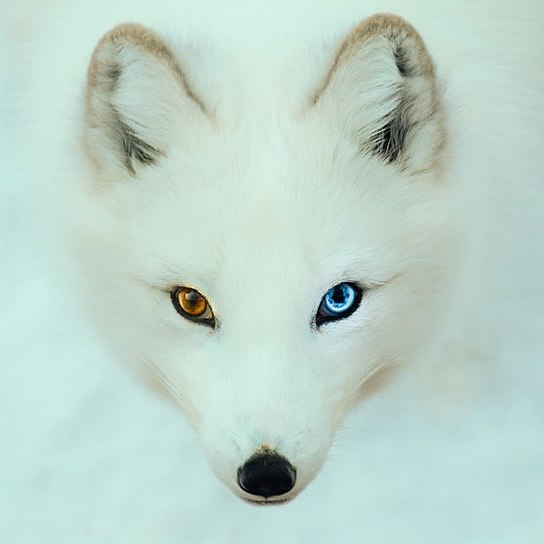

Thinking Outside The Fox
Arctic Fox
In the winter the arctic fox has an almost fully white coat that allows it to camouflage itself extremely well in the arctic environment. Once summer comes the fox sheds this fur and replaces it with a coat of more grays and browns to match its environment Unlike other foxes the males and females can be quite different in size. They can be anywhere from 1 to 3 feet in length overall. This breed has been found in many places, including Europe, Asia, and North America. The arctic fox survives in some of the harshest habitats in the world.
These foxes, while similar to other foxes in size and anatomy, are not as good pets compared to options like the red and silver fox. It has the same urine smell as the red fox but its primary difference is their issue with hot temperatures. If you live in a place where the temperature can get warm then you will need to take extra measures to keep them cool at those times of year.